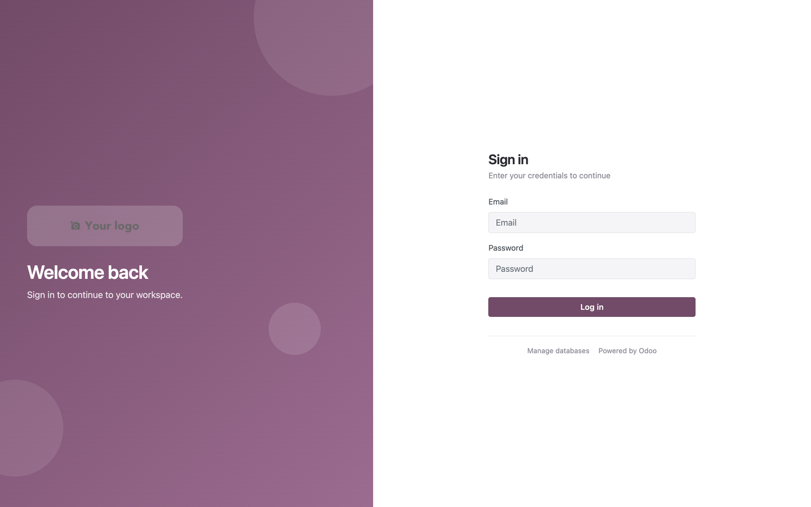
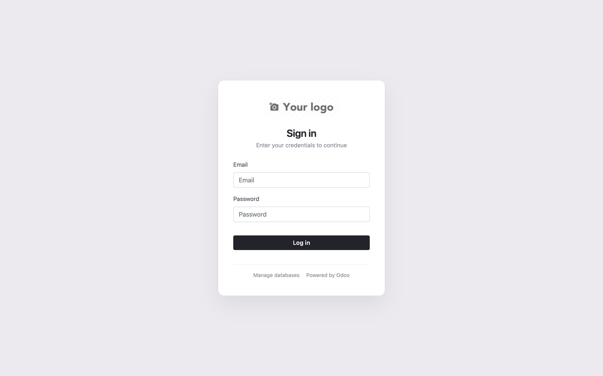
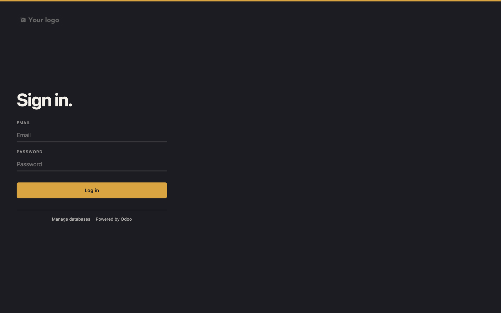
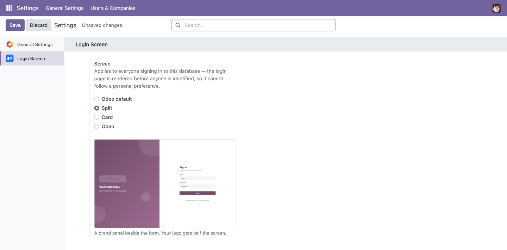

Three login screens — the administrator picks one in Settings
Odoo's login page is the first thing anyone sees of your system, and the one screen you cannot change from the interface. This module gives you three finished designs for it. An administrator opens Settings → Login Screen, picks one from a list, sees a preview of it right there, and that is what everyone gets.
A brand panel beside the form. Your logo gets half the screen, on a gradient with soft shapes behind it — the choice for a company that wants the login page to look like theirs.

One card on a plain ground. No panel, no imagery, no motion. For people who sign in several times a day and want the screen out of the way.

No card and no second column at all. The form stands directly on a field of colour, ranged left, with underlines instead of boxes. The colour is a setting — type a hex value and the whole screen follows it.

Odoo still renders the formNone of the three screens reimplements the login form. Odoo injects its own, so the fields, the CSRF token, the error messages, password reset and any OAuth buttons keep working exactly as they do without this module. |
Anything unknown falls backThe login page is the one page nobody can recover from through the interface. Any setting this module does not recognise — an empty value, a typo, something left by an older version — renders Odoo's own login page, reproduced unchanged. |
A pale colour still readsThe background colour is checked as a plain six-digit hex before it is stored, and whether the text on it should be light or dark is worked out from the colour's luminance — so a pale colour cannot produce a login page nobody can read. |
No developer mode, no editing a template. The setting is database-wide by nature: the login page renders before anyone is identified, so there is no user to read a preference from.

Built on Odoo Community modules only, so it runs on both editions. Available for
Odoo 17.0, 18.0 and 19.0. It depends on web and base_setup,
adds no model and writes nothing to any user record — both settings live in
ir.config_parameter. Uninstall at any time and the standard Odoo login
returns.